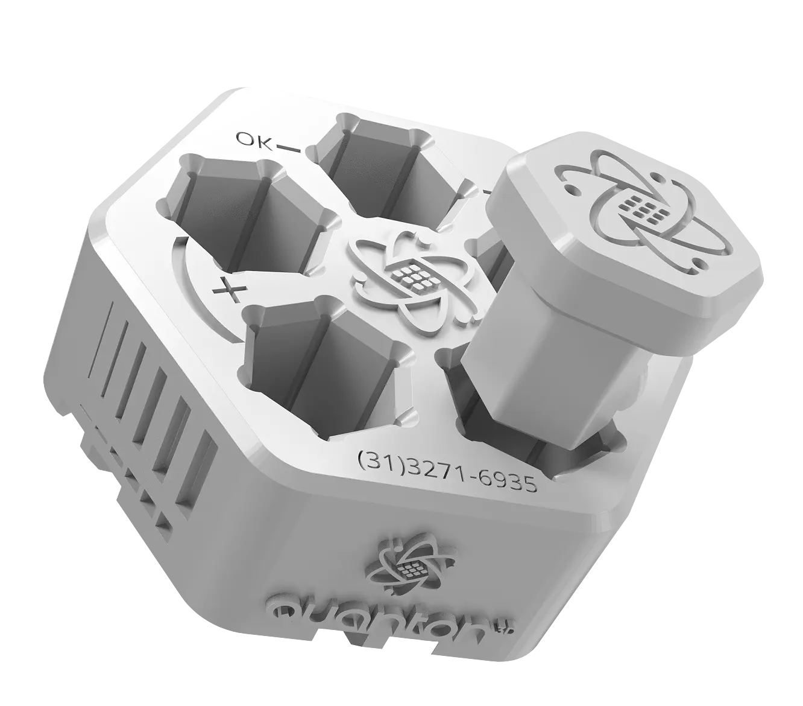
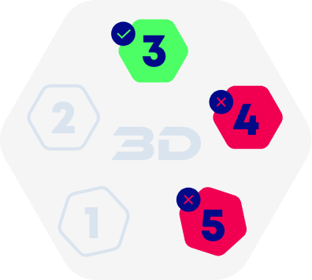
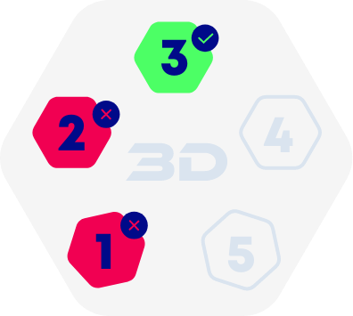

📋 Por que Calibrar?
A impressão de um arquivo de teste é essencial para garantir a qualidade das suas impressões. Ele deve conter características que evidenciem se a configuração da sua impressora e do fatiador está correta. Pensando nisso, a Quanton3D disponibiliza o arquivo ideal para download. Siga as instruções e descubra como é simples utilizá-lo para alcançar resultados impecáveis!

DOWNLOAD
Realize o download do arquivo e execute utilizando o fatiador de sua preferência.
- Acesse: quanton3d.com.br/calibrador
- Baixe o arquivo STL do gabarito gratuitamente
- Abra no fatiador (Chitubox, Lychee Slicer, PrusaSlicer, etc)
- NÃO adicione suportes - o arquivo já está otimizado
- Mantenha a posição original - não rotacione
IMPRESSÃO
Com os parâmetros fornecidos em nosso site, configure o fatiador de acordo com a resina utilizada. Nosso arquivo .STL não requer suportes, basta fatiar na posição original e iniciar a impressão.
- Acesse "Parâmetros de Impressão" no site da Quanton3D
- Selecione sua resina (ABS-Like, Flexível, Dental, etc)
- Selecione seu modelo de impressora
- Configure o fatiador com os parâmetros recomendados
- Fatie e inicie a impressão
💡 Dica Importante
Certifique-se de que a impressora está nivelada corretamente antes de iniciar. Use resina nova e bem agitada para resultados precisos!
PÓS IMPRESSÃO
Realize a limpeza correta das peças para eliminar o excesso de resina. Em seguida, realize a cura.
- Remova da plataforma com cuidado
- Lave em álcool isopropílico 99% por 2-3 minutos
- Use escova macia para limpar os detalhes
- Seque completamente
- Cure na câmara UV conforme recomendação
- Deixe esfriar antes do teste
⚠️ ATENÇÃO
A limpeza inadequada pode invalidar o teste! Remova toda a resina não curada entre as peças antes de fazer o teste de encaixe.
ENCAIXE ENTRE AS PEÇAS
Sem forçar, encaixe o pino no número 3 e verifique se o mesmo está encaixado perfeitamente.
✅ Calibração Perfeita
Se o pino encaixou perfeitamente no número 3, PARABÉNS! Sua calibração está ideal! Use esses parâmetros para suas impressões.

💡 Como Testar
Pegue o pino impresso e tente encaixar no orifício número 3 SEM FORÇAR. O encaixe deve ser suave, com leve pressão. Se precisar forçar muito ou se entrar muito fácil, precisa ajustar!
EM CASO DE FALHA FAÇA O AJUSTE FINO DE EXPOSIÇÃO
Caso o pino não tenha encaixado no número 3, identifique o problema e ajuste conforme abaixo:

📈 Ajuste Esquerda (Subexposição)
Situação: Pino NÃO encaixou no 3, mas encaixou bem nos números 1 e 2
Solução: AUMENTAR o tempo de exposição em no máximo 0.5s
Exemplo: 2.5s → 3.0s

📉 Ajuste Direita (Superexposição)
Situação: Pino NÃO encaixou no 3, mas encaixou bem nos números 4 e 5
Solução: REDUZIR o tempo de exposição em no máximo 0.5s
Exemplo: 3.0s → 2.5s
🔄 Processo Iterativo
Repita os processos até que o pino encaixe perfeitamente no número 3. Geralmente são necessárias 2-3 tentativas para encontrar o ponto ideal. Anote todos os resultados!
Entendendo o Gabarito
O gabarito Quanton3D possui 5 posições numeradas que testam diferentes níveis de tolerância dimensional:
- Números 1 e 2: Orifícios MAIORES (tolerância alta) - indicam subexposição se o pino só encaixar aqui
- Número 3: Orifício IDEAL (tolerância perfeita) - OBJETIVO da calibração ✅
- Números 4 e 5: Orifícios MENORES (tolerância baixa) - indicam superexposição se o pino só encaixar aqui
💡 Lógica do Teste
Quanto maior o tempo de exposição, menores ficam os orifícios (mais resina cura). Quanto menor o tempo, maiores ficam os orifícios (menos resina cura). O número 3 representa o equilíbrio perfeito!
Quando Recalibrar?
- Ao trocar de resina - mesmo que seja da mesma marca
- Ao trocar de impressora ou substituir a tela LCD
- Após 3-6 meses de uso contínuo da mesma resina
- Quando notar perda de qualidade ou precisão dimensional
- Após mudanças de temperatura ambiente significativas
- Ao abrir frasco novo - pode haver variações de lote